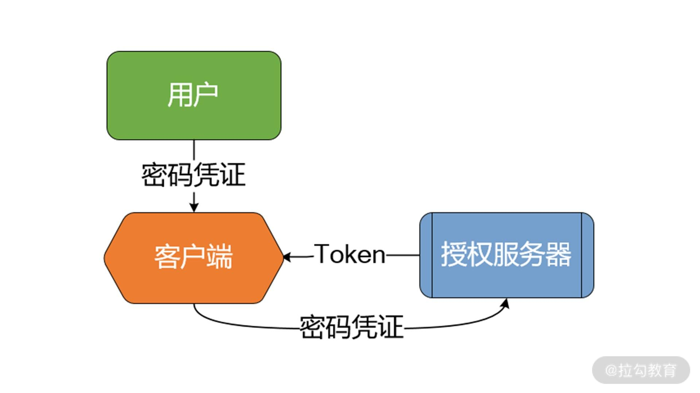
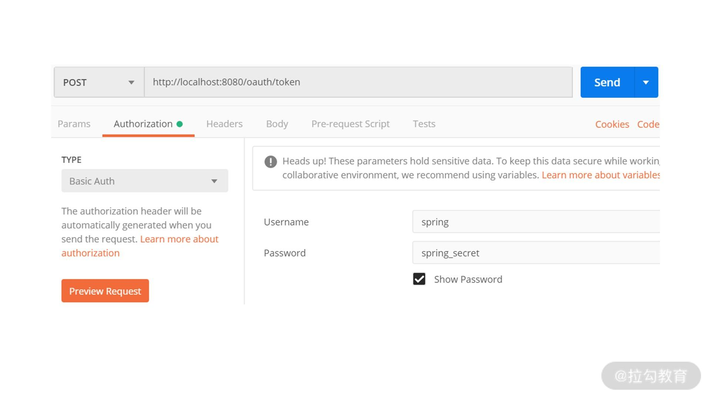
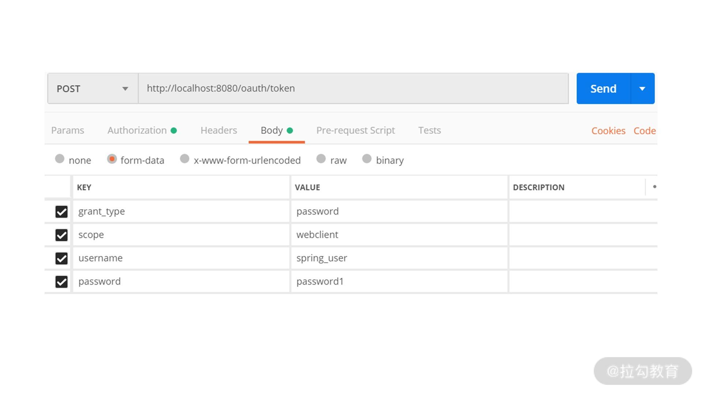
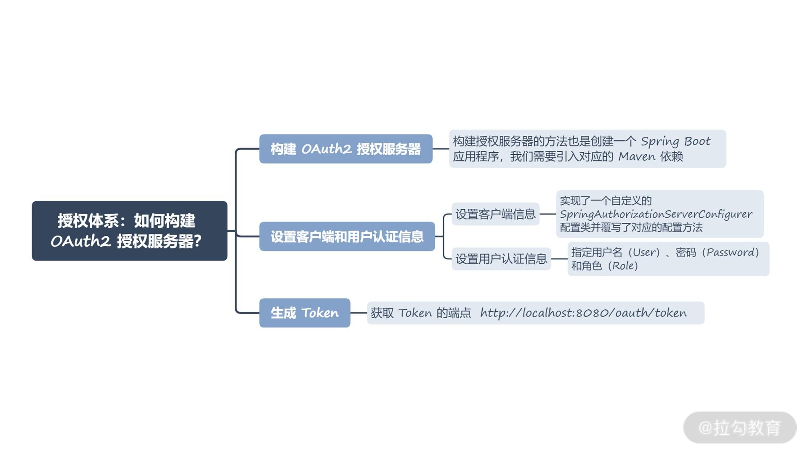

- 00 开篇词 Spring Security，为你的应用安全与职业之路保驾护航.md.html
- 01 顶级框架：Spring Security 是一款什么样的安全性框架？.md.html
- 02 用户认证：如何使用 Spring Security 构建用户认证体系？.md.html
- 03 认证体系：如何深入理解 Spring Security 用户认证机制？.md.html
- 04 密码安全：Spring Security 中包含哪些加解密技术？.md.html
- 05 访问授权：如何对请求的安全访问过程进行有效配置？.md.html
- 06 权限管理：如何剖析 Spring Security 的授权原理？.md.html
- 07 案例实战：使用 Spring Security 基础功能保护 Web 应用.md.html
- 08 管道过滤：如何基于 Spring Security 过滤器扩展安全性？.md.html
- 09 攻击应对：如何实现 CSRF 保护和跨域 CORS？.md.html
- 10 全局方法：如何确保方法级别的安全访问？.md.html
- 11 案例实战：使用 Spring Security 高级主题保护 Web 应用.md.html
- 12 开放协议：OAuth2 协议解决的是什么问题？.md.html
- 13 授权体系：如何构建 OAuth2 授权服务器？.md.html
- 14 资源保护：如何基于 OAuth2 协议配置授权过程？.md.html
- 15 令牌扩展：如何使用 JWT 实现定制化 Token？.md.html
- 16 案例实战：基于 Spring Security 和 Spring Cloud 构建微服务安全架构.md.html
- 17 案例实战：基于 Spring Security 和 OAuth2 实现单点登录.md.html
- 18 技术趋势：如何为 Spring Security 添加响应式编程特性？.md.html
- 19 测试驱动：如何基于 Spring Security 测试系统安全性？.md.html
- 20 结束语 以终为始，Spring Security 的学习总结.md.html
- 捐赠
13 授权体系：如何构建 OAuth2 授权服务器？
上一讲我们讨论了 OAuth2 协议的详细内容，相信你已经了解了可以使用 OAuth2 协议实现微服务之间访问的授权。但是在此之前，我们需要在微服务系统中构建 OAuth2 授权服务器。今天我们就基于 Spring Security 框架，讨论如何构建这一授权服务器，并基于常用的密码模式生成对应的 Token，从而为下一讲中的服务访问控制提供基础。
构建 OAuth2 授权服务器
从表现形式上看，OAuth2 授权服务器也是一个独立的微服务，因此构建授权服务器的方法也是创建一个 Spring Boot 应用程序，我们需要引入对应的 Maven 依赖，如下所示：
<dependency>
<groupId>org.springframework.security.oauth</groupId>
<artifactId>spring-security-oauth2</artifactId>
</dependency>
这里的 spring-security-oauth2 就是来自 Spring Security 中的 OAuth2 库。现在 Maven 依赖已经添加完毕，下一步就是构建 Bootstrap 类作为访问的入口：
@SpringBootApplication
@EnableAuthorizationServer
public class AuthorizationServer {
public static void main(String[] args) {
SpringApplication.run(AuthorizationServer.class, args);
}
}
请注意，这里出现了一个新的注解 @EnableAuthorizationServer，这个注解的作用在于为微服务运行环境提供一个基于 OAuth2 协议的授权服务，该授权服务会暴露一系列基于 RESTful 风格的端点（例如 /oauth/authorize 和 /oauth/token）供 OAuth2 授权流程使用。
构建 OAuth2 授权服务只是集成 OAuth2 协议的第一步，授权服务器是一种集中式系统，管理着所有与安全性流程相关的客户端和用户信息。因此，接下来我们需要在授权服务器中对这些基础信息进行初始化，而 Spring Security 为我们提供了各种配置类来实现这一目标。
设置客户端和用户认证信息
上一讲我们提到 OAuth2 协议存在四种授权模式，并提到在微服务架构中，密码模式以其简单性得到了广泛的应用。在接下来的内容中，我们就以密码模式为例展开讲解。
在密码模式下，用户向客户端提供用户名和密码，并将用户名和密码发给授权服务器从而请求 Token。授权服务器首先会对密码凭证信息进行认证，确认无误后，向客户端发放 Token。整个流程如下图所示：

密码模式授权流程示意图
请注意，授权服务器在这里执行认证操作的目的是验证传入的用户名和密码是否正确。在密码模式下，这一步是必需的，如果采用其他授权模式，不一定会有用户认证这一环节。
确定采用密码模式后，我们来看为了实现这一授权模式，需要对授权服务器做哪些开发工作。首先我们需要设置一些基础数据，包括客户端信息和用户信息。
设置客户端信息
我们先来看如何设置客户端信息。设置客户端时，用到的配置类是 ClientDetailsServiceConfigurer，该配置类用来配置客户端详情服务 ClientDetailsService。用于描述客户端详情的 ClientDetails 接口则包含了与安全性控制相关的多个重要方法，该接口中的部分方法定义如下：
public interface ClientDetails extends Serializable {
//客户端唯一性 Id
String getClientId();
//客户端安全码
String getClientSecret();
//客户端的访问范围
Set<String> getScope();
//客户端可以使用的授权模式
Set<String> getAuthorizedGrantTypes();
…
}
上述代码中的几个属性都与日常开发工作息息相关。
首先 ClientId 是一个必备属性，用来唯一标识客户的 Id，而 ClientSecret 代表客户端安全码。这里的 Scope 用来限制客户端的访问范围，如果这个属性为空，客户端就拥有全部的访问范围。常见的设置方式可以是 webclient 或 mobileclient，分别代表 Web 端和移动端。
最后，authorizedGrantTypes 代表客户端可以使用的授权模式，可选的范围包括代表授权码模式的 authorization_code、代表隐式授权模式 implicit、代表密码模式的 password 以及代表客户端凭据模式的 client_credentials。这个属性在设置上也可以添加 refresh_token，通过刷新操作获取以上授权模式下产生的新 Token。
和实现认证过程类似，Spring Security 也提供了 AuthorizationServerConfigurerAdapter 这个配置适配器类来简化配置类的使用方式。我们可以通过继承该类并覆写其中的 configure(ClientDetailsServiceConfigurer clients) 方法进行配置。使用 AuthorizationServerConfigurerAdapter 进行客户端信息配置的基本代码结构如下：
@Configuration
public class SpringAuthorizationServerConfigurer extends AuthorizationServerConfigurerAdapter {
@Override
public void configure(ClientDetailsServiceConfigurer clients) throws Exception {
clients.inMemory()
.withClient("spring")
.secret("{noop}spring_secret")
.authorizedGrantTypes("refresh_token", "password", "client_credentials")
.scopes("webclient", "mobileclient");
}
}
可以看到，我们创建了一个 SpringAuthorizationServerConfigure r类来继承 AuthorizationServerConfigurerAdapter，并通过 ClientDetailsServiceConfigurer 配置类设置了授权模式为密码模式。在授权服务器中存储客户端信息有两种方式，一种就是如上述代码所示的基于内存级别的存储，另一种则是通过 JDBC 在数据库中存储详情信息。为了简单起见，这里使用了内存级别的存储方式。
同时我们注意到，在设置客户端安全码时使用了”{noop}spring_secret”这种格式。这是因为在 Spring Security 5 中统一使用 PasswordEncoder 对密码进行编码，在设置密码时要求格式为“{id}password”。而这里的前缀“{noop}”就是代表具体 PasswordEncoder 的 id，表示我们使用的是 NoOpPasswordEncoder。关于 PasswordEncoder，你可以回顾[“密码安全：Spring Security 中包含哪些加解密技术？”]一讲中的内容。
我们已经在前面的内容中提到，@EnableAuthorizationServer 注解会暴露一系列的端点，而授权过程是使用 AuthorizationEndpoint 这个端点进行控制的。要想对该端点的行为进行配置，你可以使用 AuthorizationServerEndpointsConfigurer 这个配置类。和 ClientDetailsServiceConfigurer 配置类一样，我们也通过使用 AuthorizationServerConfigurerAdapter 配置适配器类进行配置。
因为我们指定了授权模式为密码模式，而密码模式包含认证环节。所以针对 AuthorizationServerEndpointsConfigurer 配置类需要指定一个认证管理器 AuthenticationManager，用于对用户名和密码进行认证。同样因为我们指定了基于密码的授权模式，所以需要指定一个自定义的 UserDetailsService 来替换全局的实现。关于 UserDetailsService 我们已经在[“用户认证：如何使用 Spring Security 构建用户认证体系？”]一讲中做了详细的讨论，我们明确可以通过如下代码来配置 AuthorizationServerEndpointsConfigurer：
@Configuration
public class SpringAuthorizationServerConfigurer extends AuthorizationServerConfigurerAdapter {
@Autowired
private AuthenticationManager authenticationManager;
@Autowired
private UserDetailsService userDetailsService;
@Override
public void configure(AuthorizationServerEndpointsConfigurer endpoints) throws Exception {
endpoints.authenticationManager(authenticationManager).userDetailsService(userDetailsService);
}
}
至此，客户端设置工作全部完成，我们所做的事情就是实现了一个自定义的 SpringAuthorizationServerConfigurer 配置类并覆写了对应的配置方法。
设置用户认证信息
设置用户认证信息所依赖的配置类是 WebSecurityConfigurer 类，Spring Security 同样提供了 WebSecurityConfigurerAdapter 类来简化该配置类的使用方式，我们可以继承 WebSecurityConfigurerAdapter 类并且覆写其中的 configure() 的方法来完成配置工作。
关于 WebSecurityConfigurer 配置类，我们首先需要明确配置的内容。实际上，设置用户信息非常简单，只需要指定用户名（User）、密码（Password）和角色（Role）这三项数据即可，如下所示：
@Configuration
public class SpringWebSecurityConfigurer extends WebSecurityConfigurerAdapter {
@Override
@Bean
public AuthenticationManager authenticationManagerBean() throws Exception {
return super.authenticationManagerBean();
}
@Override
@Bean
public UserDetailsService userDetailsServiceBean() throws Exception {
return super.userDetailsServiceBean();
}
@Override
protected void configure(AuthenticationManagerBuilder builder) throws Exception {
builder
.inMemoryAuthentication()
.withUser("spring_user")
.password("{noop}password1")
.roles("USER")
.and()
.withUser("spring_admin")
.password("{noop}password2")
.roles("USER", "ADMIN");
}
}
结合上面的代码，我们看到构建了具有不同角色和密码的两个用户，请注意”spring_user”代表的角色是一个普通用户，”spring_admin”则具有管理员角色。我们在设置密码时，同样需要添加前缀“{noop}”。同时，我们还看到 authenticationManagerBean()和 userDetailsServiceBean() 方法分别返回了父类的默认实现，而这里返回的 UserDetailsService 和 AuthenticationManager 在前面设置客户端时会用到。这里使用的用户认证机制你也可以回顾[“用户认证：如何使用 Spring Security 构建用户认证体系？”]中的内容。
生成 Token
现在，OAuth2 授权服务器已经构建完毕，启动这个授权服务器，我们就可以获取 Token。我们在构建 OAuth2 服务器时已经提到授权服务器中会暴露一批端点供 HTTP 请求进行访问，而获取 Token 的端点就是http://localhost:8080/oauth/token。在使用该端点时，我们需要提供前面配置的客户端信息和用户信息。
这里使用 Postman 来模拟 HTTP 请求，客户端信息设置方式如下图所示：

客户端信息设置示意图
我们在“Authorization”请求头中指定认证类型为“Basic Auth”，然后设置客户端名称和客户端安全码分别为“spring”和“spring_secret”。
接下来我们指定针对授权模式的专用配置信息。首先是用于指定授权模式的 grant_type 属性，以及用于指定客户端访问范围的 scope 属性，这里分别设置为 “password”和“webclient”。既然设置了密码模式，所以也需要指定用户名和密码用于识别用户身份，这里，我们以“spring_user”这个用户为例进行设置，如下图所示：

用户信息设置示意图
在 Postman 中执行这个请求，会得到如下所示的返回结果：
{
"access_token": "0efa61be-32ab-4351-9dga-8ab668ababae",
"token_type": "bearer",
"refresh_token": "738c42f6-79a6-457d-8d5a-f9eab0c7cc5e",
"expires_in": 43199,
"scope": "webclient"
}
可以看到，除了作为请求参数的 scope，这个返回结果中还包含了 access_token、token_type、refresh_token 和 expires_in 等属性。这些属性都很重要，我们在上一讲中都做了详细的介绍。当然，因为每次请求生成的 Token 都是唯一的，所以你在尝试时获取的结果可能与我的不同。
小结与预告
对微服务访问进行安全性控制的首要条件是生成一个访问 Token。这一讲我们从构建 OAuth2 服务器讲起，基于密码模式给出了如何设置客户端信息、用户认证信息以及最终生成 Token 的实现过程。这个过程中需要开发人员熟悉 OAuth2 协议的相关概念以及 Spring Security 框架中提供的各项配置功能。
本讲内容总结如下：

最后给你留一道思考题：基于密码模式，你能说明生成 Token 需要哪些具体的开发步骤吗？
© 2019 - 2023 Liangliang Lee. Powered by gin and hexo-theme-book.